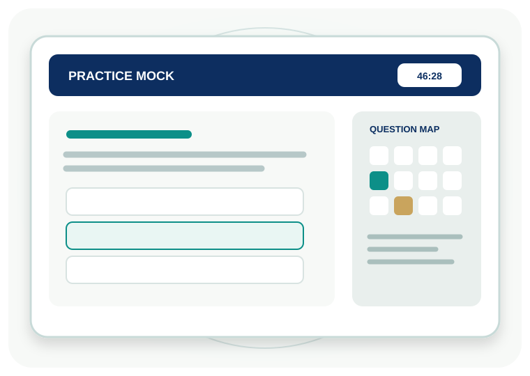

YOUR PRACTICE ARENAPractice with purpose.
Practice with purpose.
Prepare by subject.
Choose Nursing, Paramedical, Medical UG or Medical PG. Attempt a syllabus-mapped paper and review your score and subject-wise performance.
100 MCQs~47 minutes+1 / −0.25 / 0
Choose your pathway 
47:00Practice
timer
timer
SELECT YOUR PRACTICE STREAMReady when
Ready when
you are.
Each pathway has its own 100-question bank mapped to the published practice syllabus.
100Questions
47:00Timer
+1Correct answer
−0.25Incorrect answer
01Choose pathwayOne of four independent banks
02Attempt 100 MCQs47-minute practice timer
03Review answersExplanations and marking
04Improve by subjectFind your revision focus
This is a practice-only mock test. It runs in your browser. Your answers and score are not submitted to the official exam system, not stored in the registration database and do not count as an official HTSE result. The official examination uses the same confirmed marking scheme and approximately 47-minute duration, but official scores are calculated and stored server-side.
PRACTICE SESSION
Paramedical Mock Test
100 questions · approximately 47 minutes · −0.25 for incorrect answers
TIME LEFT47:00
QUESTION 1 OF 100Topic
PRACTICE COMPLETEYour effort.
Your effort.
Your score.
0out of 100
0Correct
0Incorrect
0Unanswered
0%Score
Practice result only. This score is calculated in your browser for learning and self-assessment. It is not an official result, rank, scholarship decision or admission outcome.